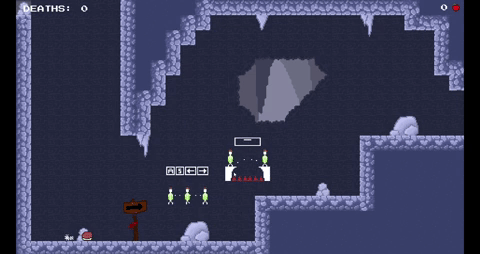
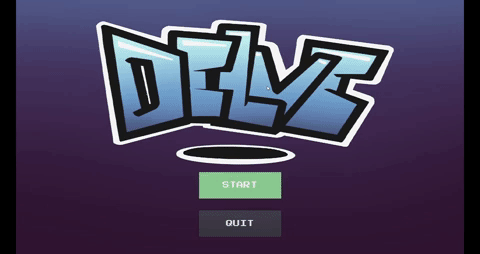
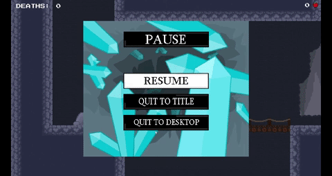

Delve
What is Delve?
As said before, Delve is a game jam project done in the fall semester. The team took inspiration from Celeste's art and gameplay when developing the game. It is a 2D platformer that takes inspiration from Celeste and cat mario to fit the deception theme. The story of Delve is that you are an explorer who fell into a cave and are attempting to get out.
Brainstorming
The theme of the game jam was deception, so before development we discussed how we could fit the theme into the game. Eventually, we decided on a cat mario inspired game where the player would get faked out by certain gameplay elements; some obstacles would be fake, falling platforms might rise instead, etc. Being inspired from Celeste, we stuck with a 2D art style and cave like color palette for the game. We chose to work with a github repository for sharing the project and a trello page to keep track of what is currently being worked on in the project.
What was My Role?
 My role was developing the UI for the game, as well as audio design. I implemented features such as a functional pause menu and title screen, all using Godot's built in signal features. The audio was used from a website called "Kenney Game Assets," but the music was constructed by me. I also implemented input and event support for keyboard, mouse, and gamepad in the project settings.
Challenges Faced / Changes Made
The biggest problem I faced when programming the project was getting the pause pop-up to work correctly; the game would pause, but the pop-up would not load. The main issue was because the canvas-layer node was placed after the control node that changed the game from being paused to not paused; so I needed to a have the canvas-layer node set as the parent, and the control node as its child.
Download Project
Currently work in progress